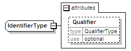

| diagram |  | ||||||||||||
| namespace | urn:oasis:names:tc:evs:schema:eml:ts | ||||||||||||
| type | extension of xs:anyURI | ||||||||||||
| properties |
|
||||||||||||
| used by |
|
||||||||||||
| attributes |
|
||||||||||||
| source | <xs:complexType name="IdentifierType"> <xs:simpleContent> <xs:extension base="xs:anyURI"> <xs:attribute name="Qualifier" type="QualifierType" use="optional"/> </xs:extension> </xs:simpleContent> </xs:complexType> |
| type | QualifierType | |||||||||
| properties |
|
|||||||||
| facets |
|
|||||||||
| source | <xs:attribute name="Qualifier" type="QualifierType" use="optional"/> |